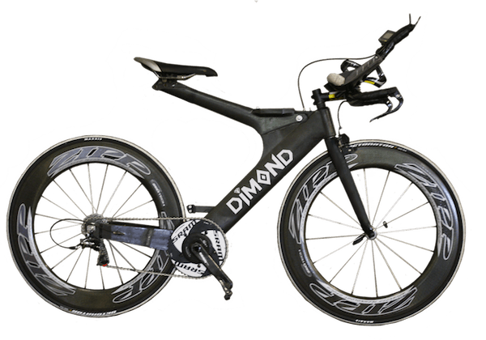
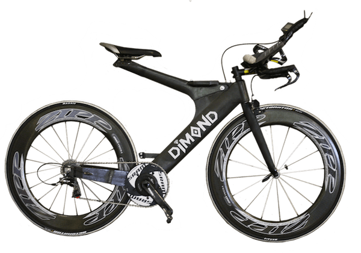

Road

$1320 - Trek Madone 2.1 2014
Madone is race-bike royalty. This incredible frame combines a super-aero
shape with a phenomenally light, stiff ride feel that wins on any terrain.
Buy Here
$3900 - Orbea Orca M20 2014
Value shouldn’t be a demeaning word; Shimano’s Ultegra 11-speed mechanical
groupset continues to offer more bang-for-your-buck than any other group in the
component world. With it matched to our all-new OMP carbon fiber Orca frameset,
you’ll be guaranteed to have a high performance, road racing bicycle. It’s a
bike with plenty of durability for heavy training as well as the lightness and
efficiency for serious competition. The new frame is lighter, stiffer, and yet
more compliant than any Orca before it. The Orca M20 will help you take your
first victory at the cash register. The next one, out on the road, will be up to you.
Buy Here


$9,500 - Specialized S-Works Tarmac Di2 Disc 2014
The new S-Works Tarmac Disc is Rider-First Engineered™ to provide every size
frame with the hill destroying stiffness and legendary descending prowess
the Tarmac is known for. It's a no compromise race-bred machine and now
with full hydraulic Shimano disc brakes, slowing down has never been easier.
Buy Here
$950 - Specialized Allez Sport 2014
The stiff, light, race-inspired Allez E5 Sport offers great acceleration
and handling—perfect for an aspiring racer, or as a first road bike if
you're just getting into the sport. 9-speed Shimano Sora drivetrain and
dependable wheelset delivers high-end performance at a serious value.
Buy Here
$1,100 - Trek 1.5 2014
1 Series aluminum road bikes feature the same aero shaping and race-ready
detail as our top-end bikes. They're strong, light, and built to fly over the pavement.
Buy Here
$2,180 - Masi Evoluzione 105 2014
Days, weeks, months and years of of blood, sweat and tears have gone into
training. The time has come to take your game to the next level. Featuring an
exclusive Masi MC5 and MC7 carbon fiber frame and fork, an 11-speed drivetrain
and a pedigree of winning thanks to the Monster Media Racing team, the Evoluzione
Series is the quickest way to reach the top step of the podium.
Buy Here
Touring
$1,320 - Trek 520 2014
520 is the classic steel touring bike, perfected. It's been tuned for maximum comfort,
stability, and reliability, day after day, week after week, year after year. If you’re a
committed touring cyclist looking for the utmost in comfort and durability to carry you
to familiar destinations and unexplored vistas, 520 is your ride.
Buy Here
$2,300 - Cannondale Caad T1 2014
Back in 1983, Cannondale made its very first frame: A touring bike. Since then,
it has always been in the line. So we know a little bit about touring. So from the
market in Karachi to the grocery in Kalispell, Cannondale touring bikes have been
there, done that.
Buy Here
$730 - Fuji Touring Road Bike 2014
The new S-Works Tarmac Disc is Rider-First Engineered™ to provide every size
frame with the hill destroying stiffness and legendary descending prowess
the Tarmac is known for. It's a no compromise race-bred machine and now
with full hydraulic Shimano disc brakes, slowing down has never been easier.
Buy Here
$1,500 - Kona Freerange Sutra 2014
It’s the ultimate touring bike. Featuring an incredibly well thought out
Kona Cromoly frame that’s designed to deliver both comfort and performance for
many thousands of miles, the Sutra comes loaded with all the tools needed for
the Long Sweet Ride: fenders, rear rack and all the necessary components to foot
the bill. The bike features a sturdy rear carrier and bar-end shifters for simplicity.
The oversized 44mm headtube gives a more precise ride while the steel tubing keeps
things plush and smooth. Our new touring/randonneur bar, the Wet Bar, features flared
drops and a short reach to keep things comfortable.
Buy Here
$4,250 - Koga Signature World Traveller 2014
This pioneering traveller from the Koga-Signature range will take you to the ends
of the earth and back: from Canada to Australia, from India to Norway. Rated by
connoisseurs for its reliability, respected for its quality which has been proven
under the most extreme conditions.
Buy Here
$1,450 - Brodie Elan 2014
Year after year our touring bicycles continue to grow in popularity and number.
Butted steel and 700c tires (exception of 48cm) allow for a quick and lively ride.
Disc brakes are a must; barreling down a hill with a loaded down bicycle, you need ultimate
stopping power! For those looking for increased stability as well as a more upright comfortable
road bike, our touring bikes have become a fast favorite with commuters. Rack and fender
ready, these bikes are ready for wherever your journey will take you.
Buy Here
Triathlon
 

$4,300 - Cervelo P3 Ultegra 2014
The new P3 collects many of the engineering advances we made with the P5,
and through our industrial design process sketches and smoothes them together
to create a bike with speed built in: the new P3 is both stiffer and faster than its
predecessor. Whether you’re on a regular training ride or setting a new PB, the
P3 delivers motivation by design. This is a bike that’s as ready to race as you are.
Buy Here
$13,000 - Ruster Sports Diamond Premium Build 2014
No compromises. This is the fastest bike in the world – only the sleekest components
make the cut on the crown jewel of our lineup. Legendary Zipp Vuka Stealth fully
integrated aerobars and Zipp Firecrest carbon clincher wheels roll smooth under
an ultra-precise Dura-Ace electronic drivetrain. Show up with your A game on the
Premium Build and leave nothing to chance.
Buy Here
$6,100 - Trek Speed Concept 9.5 2014
Speed Concept is pure drag-defying tri performance. It offers total aerodynamic
integration, incredible fit, and even Project One customization, all in one incredible system.
Buy Here
$3,100 - Trek Speed Concept 7.0 2014
Speed Concept is pure drag-defying tri performance. It offers total aerodynamic
integration, incredible fit, and even Project One customization, all in one incredible system.
Buy Here
$3,700 - Felt B2 2014
The B2 is a triathlon ready bike. Created from Aero TT/Tri UHC Performance carbon
fiber and equipped with Shimano Ultegra Di2 for flawless shifting, the B2 is the perfect
bike for rocketing out of the transitional area. The Felt TTR3 wheels with Aero TTR2 tires
slice through the wind, setting your new personal best.
Buy Here
{kind=link}
$4,400 - Focus Izalco Chrono Max 2.0 2014
To win the race against the clock, you need the right weapon. Time trial guru Andreas Walser
and FOCUS have jointly developed a bike which shaves valuable tenths of seconds in every battle.
Ultra-flat aerodynamic carbon tubes, wafer thin trailing edges and the rear wheel tucked in behind
the seat tube prevent unnecessary air turbulence. The Chrono is for time-trialists, triathletes and
anyone with a serious speed fetish.
Buy Here